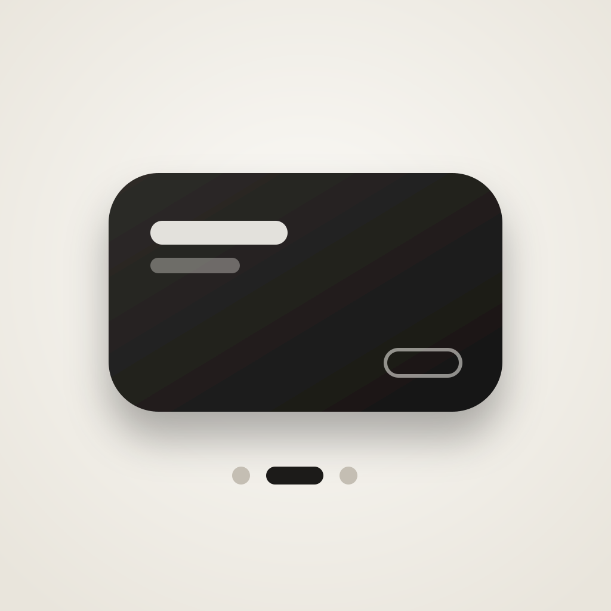

iPhone only lets a page use the microphone over a secure connection. The TV box has its own certificate. Trust it once and voice works from then on.
✓ Your phone trusts the TV box.
You'll stay paired. Afterwards, add the new page to your Home Screen (Share › Add to Home Screen) and remove the old icon.
